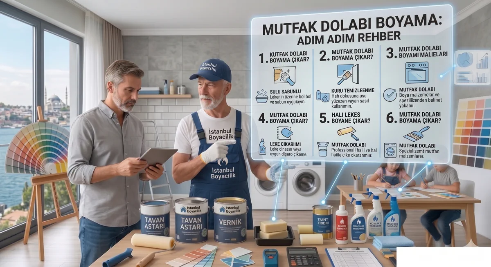

Mutfak dolabı boyamada ilk adım yüzeyi tanımaktır. Masif ahşap, ham MDF, laminat kaplı levha ve eski vernik aynı hazırlıkla boyanmaz. Kabarmış levha veya ayrılan kaplama önce onarılmalı; boya, yapısal hasarı düzeltmek için kullanılmamalıdır.
Dolap yüzeyine göre hazırlık kararı
| Yüzey | Kontrol / ürün sistemi |
|---|---|
| Masif ahşap | Yağ, eski cila ve gevşek katları belirleyin. Ham ahşap için onaylı dolgu/astar ve son kat sistemi; gerekiyorsa leke geçişini önleyen hazırlık seçilir. |
| Ham MDF | Emici kenarlar ile düz yüzeyi ayırın. MDF için izin verilen hazırlığı ve astar ihtiyacını teyit edin; levhayı suyla ıslatmayın. |
| Laminat / melamin / folyo | Kaplamanın türünü belirleyin. Yalnız ahşap veya MDF uygunluğu, bu kaplamaya uygunluğu kanıtlamaz; üretici onayı, yapışma astarı gerekiyorsa uyumlu ürün ve numune gerekir. |
| Mevcut vernik / eski boya | Sağlam katın tutunmasını ve yeni sistemle uyumunu kontrol edin. Ürün talimatına göre ince matlaştırma ve toz temizliği yapılır; gevşek katın üstü kapatılmaz. |
Gerçek ürün örneği: X1 All boya ve koruyucu kat
Polisan X1 All teknik föyü (27.11.2024) mutfak dolabı, masif, MDF ve eski vernikli/boyalı yüzeyleri sayar. Fırça/rulo ile inceltilmeden 2 kat uygulama ve sağlam eski boyada ince zımpara tarif eder. Su, nem, ısı, darbe ve kimyasal etkiye maruz yüzeyde maksimum performans için X1 All Vernik ister. Bu, başka dolap boyalarına aktarılacak genel bir vernik zorunluluğu değildir.
Bu föyde laminat/melamin açıkça listelenmediği için o kaplamaya otomatik uygunluk vermiyoruz. Tam ürün sistemi teknik servisle doğrulanmadan bütün kapaklara başlamayın. X1 All örneği duvar boyası yerine dolap için kaynak okuma örneğidir; markanın bütün ürünlerinin aynı özellikte olduğu anlamına gelmez. Kaynak kontrolü: 12 Ekim 2026.
Uygulama sırası ve malzemeler
- Kapakları, kulpları ve menteşeleri söküp konumlarını işaretleyin. Tezgah, cihazlar ve çalışma alanını koruyun.
- Yağ ve temizleyici artıklarını seçilen ürünün talimatıyla giderin. Yüzeyin kurumasını bekleyin; farklı temizleyicileri karıştırmayın.
- Kaplama kalınlığını ve durumunu gözeterek gerekli zımpara/matlaştırmayı yapın. 80/120 gibi sabit bir sıra ince kaplama ve folyo için genel reçete değildir.
- Uyumlu dolgu ve gerekiyorsa astar kullanın. Sistemi kapağın arkasında veya ayrı numunede test edin; kuruduktan sonra tutunma ve görünümü değerlendirin.
- Son katı uygun fırça/rulo ve üreticinin katlar arası süresiyle uygulayın. Boyaya yalnız izin verilen inceltici ve miktar eklenir.
- Koruyucu kat gerekiyorsa onun uygulama ve kullanım beklemelerine uyun. Menteşe baskısı, üst üste istifleme ve kapakların yapışması riskini montajdan önce değerlendirin.
Kuruma ile yeniden kullanım ayrı aşamalardır
X1 All föyündeki 20°C örneğinde katlar arası 45 dakika, boya üzerine vernik için 24 saat bekleme, tam kuruma 7 gün verilir; yüzeyler ilk 2 gün kullanılmamalı, 7 gün su birikmesi ve darbeye karşı korunmalıdır. Maksimum performans 28 gün olarak belirtilir. Nem, sıcaklık ve film kalınlığı süreleri değiştirir. Verniğin kendi föyü de okunmalı; bu sayılar başka ürüne veya doğrudan yeniden montaja genellenmemelidir.
Sık Sorulan Sorular
Masif ahşap, ham MDF, laminat ve mevcut vernik ayrı değerlendirilir. Boya, gerekiyorsa astar ve koruyucu kat, üreticinin o yüzey için izin verdiği uyumlu sistemden seçilir.
Her laminat kaplama için zımparasız uygulama varsayılamaz. Kaplama türü ve durumu belirlenmeli; üreticiden uyum teyidi alınmalı ve görünmeyen küçük bir alanda tutunma numunesi yapılmalıdır.
24 saat her ürün için montaj veya kullanıma hazır olma süresi değildir. Katlar arası kuruma, vernik beklemesi ve tam kürlenme ayrıdır; seçilen boya ve verniğin talimatlarına göre montaj planlanır.
Bölgenize Göre Hizmet Alın
Duvarınızda çatlama, kabarma, dökülme veya boya lekesi gibi sorunlar varsa, doğru hazırlık ve uygulama için ücretsiz keşif talep edebilirsiniz.
Ücretsiz Keşif Talep Edin